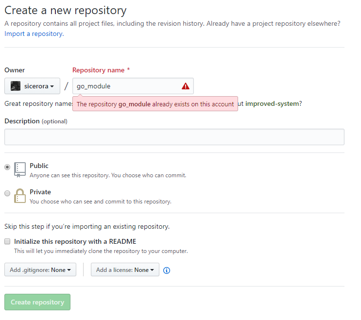

go modules 入门
从 Go 1.11 开始，Go 加入了对版本化模块的初步支持 “Go Modules”，这对 Golang 应用开发中的工程化有重大意义，而在 2019 年 8 月份计划发布的 Go 1.13 版本中，Go Modules 将被最终确认，这也意味着使用 Go Modules 进行 Golang 应用开发是未来的趋势。在本文中，将使用一个 Hello World 例子来完成 Go Modules 的 Quick Start。
环境准备
- 升级 Golang 版本 >
1.11。 - 设置环境变量
GO111MODULE=on。
创建 Hello World 模块
在 $GoPath/src 下创建项目文件夹，路径与使用的 VCS 路径相对应，这里使用 Github 作 为代码版本管理远程仓库。（路径中的 sicirora 更换为你的 Github 用户名 or 组织名 ）
$ mkdir $GoPath/src/github.com/sicerora/go_module
然后进入第一步创建的目录，进行 go module 的初始化。
$ cd $GoPath/src/github.com/sicerora/go_module
$ go mod init
创建本地 git 仓库。
$ git init
$ git commit -am "init"
创建 hello.go 文件，写一个函数用于后面的引用，文件内容：
package go_module
import "fmt"
func Hello() {
fmt.Println("hello world")
}
将刚刚的修改提交到本地仓库。
$ git commit -am "add hello word feature"
在 github 上新建一个名为 go_module 的空代码仓库, 不要创建 README.md 等文件。

将本地仓库推送到 Github。
$ git remote add origin git@github.com:sicerora/go_module.git
$ git push origin --all
使用 Hello World 模块
创建 use_go_module 项目来使用 Hello World 模块。
$ mkdir $GoPath/src/github.com/sicerora/use_go_module
$ cd $GoPath/src/github.com/sicerora/use_go_module
$ go mod init
在 use_go_moudle 里引入 Hello World 模块。
$ go get github.com/sicerora/use_go_module
创建 main.go 文件，文件内容:
package main
import "github.com/sicerora/go_module"
func main() {
go_module.Hello()
}
运行 use_go_module。
$ go run main.go
控制台输出 hello world 就顺利完成了 Hello World 模块的引用。
Go Modules 版本号的控制
Go Modules 使用 VCS 中的 tag 和 branch 进行版本控制。
- 通过 tag 控制版本。（推荐）
- 通过 branch 控制版本。（一般只在开发时使用）
下面我们为 Hello World 模块添加多个版本，并演示如何在项目中使用指定版本的模块。 进入 Hello World 模块的代码路径下。
cd $GoPath/src/github.com/sicerora/go_module
更新 hello.go 文件并提交到本地仓库，文件内容：
package go_module
import "fmt"
func Hello() {
fmt.Println("hello world: v1.0.0") // update this line
}
提交到本地仓库并添加标签。
$ git commit -am "update v1.0.0"
$ git tag -a v1.0.0 -m "version 1.0.0"
再次更新 hello.go 文件并提交到本地仓库，文件内容：
package go_module
import "fmt"
func Hello() {
fmt.Println("hello world: v1.1.0") // update this line
}
提交到本地仓库并添加标签。
$ git commit -am "update v1.1.0"
$ git tag -a v1.1.0 -m "version 1.1.0"
创建 develop 分支作为一个新的版本。
$ git checkout -b develop
更新 hello.go 文件，文件内容：
package go_module
import "fmt"
func Hello() {
fmt.Println("hello world: develop") // update this line
}
提交到本地仓库
$ git commit -am "update develop"
最后把本地仓库的 commit 和 tag 全部提交到远程仓库
$ git push origin --all
$ git push origin --tags
使用指定版本的 Hello World 模块
进入到 use_go_module 项目目录下。
$ cd $GoPath/src/github.com/sicerora/use_go_module
修改 go.mod 文件，将 require github.com/sicerora/go_module .... 这一行依次修改为：
require github.com/sicerora/go_module v1.0.0require github.com/sicerora/go_module v1.1.0require github.com/sicerora/go_module develop
更新依赖并运行 use_go_module。
$ go get
$ go run main.go
得到的控制台输出依次为：
hello world: v1.0.0hello world: v1.1.0hello world: develop
可以看到 Go Modules 帮我们引入的指定版本的模块。
小结
到这里，关于 Go Modules 的 Quick Start 就做完了。总的来说， Go Modules 使用起来是十分方便的，对于版本的控制也都结合在 VCS 中，不用再做额外的工作。